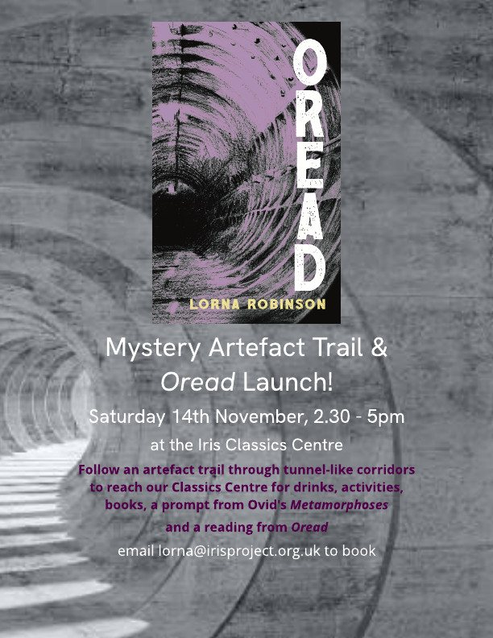

Events
Where to find me: launches, book fairs, and the café that meets every month.
Coming
-
Sat 14 Nov
Oread launch and mystery artefact trail
Saturday 14 November 2026, 2.30 to 5pm
Cheney School, OxfordArrive any time at main reception and follow the trail through tunnel-like corridors in the Rumble Museum to the Iris Classics Centre: drinks, books, chat, creative writing for anyone who wants a go, and maybe a reading. Tunnel travellers of all ages are welcome.
Contact: lro@cheneyschool.org or lorna@irisproject.org.uk

The tunnels are calling: the post about the trail -
Sun 22 Nov
Oxford Indie Book Fair, table S33
Sunday 22 November 2026, 11am to 4.30pm
Oxford Examination Schools, 75 to 81 High Street, Oxford OX1 4BGOread and Hamadryad on the table.
-
Monthly
Classics and Creative Writing Café
Once a month
The Iris Classics Centre at Cheney School, or St Alban's Church on Charles Street, OxfordBring an idea, have a go at writing, or just read and chat. Each session has a classical theme as a prompt, all genres are welcome, and it's for ages 14 to adult. There are drinks and snacks (donations towards costs are welcome). Come once or come every month.
To hear the next date, email lorna@irisproject.org.uk or see Write with us
No other dated events are booked at the moment. New dates go up here as they are fixed.
Past
New dates
Email me to hear about new dates, or follow along on Instagram and the Iris Project blog.